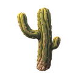
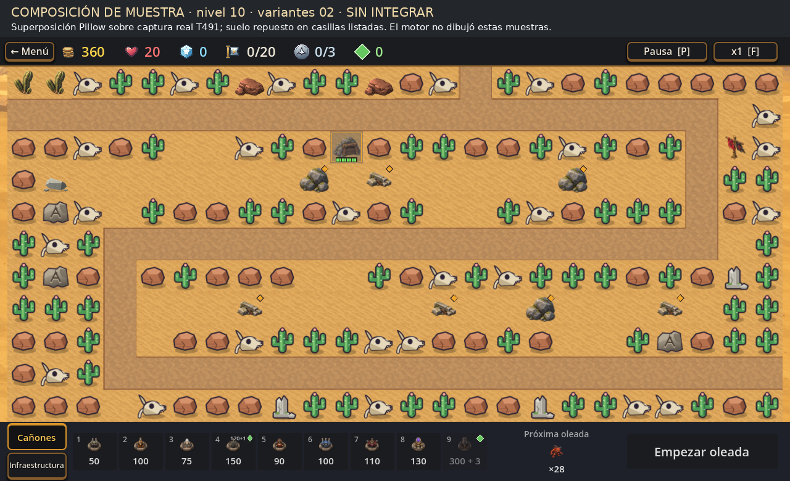

Opción 01
Tronco alto, brazo curvo y brote corto.

34 pxEscala de casilla: 64 × 64 px
Comparación de las cuatro propuestas nuevas. Las piezas todavía son muestras externas: no están integradas al juego.
La hoja muestra cada sprite a 220 px; debajo, el control a 34 px y su composición sobre el mapa del desierto.
Tronco alto, brazo curvo y brote corto.

Tres tallos carnosos, de alturas distintas.
 34 pxEscala de casilla: 64 × 64 px
34 pxEscala de casilla: 64 × 64 px
Compará la silueta y el contraste en ruinas y pradera. En ambas opciones el fogón está apagado y separado de la lona.
Tu selección local (no se envía ni se guarda):
Las composiciones de mapa son montajes externos sobre capturas de T491, no capturas del juego con estos assets. La ficha completa, procedencia y límites están en el informe de T523/T525. Para registrar la aprobación, respondé en el PR indicando cactus 01/02 y campamento 01/02, más cualquier corrección.